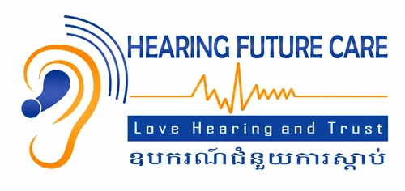
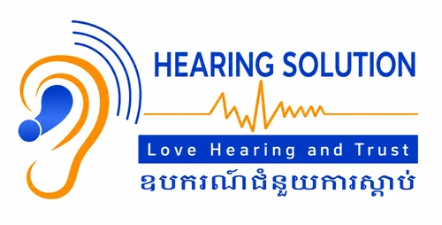
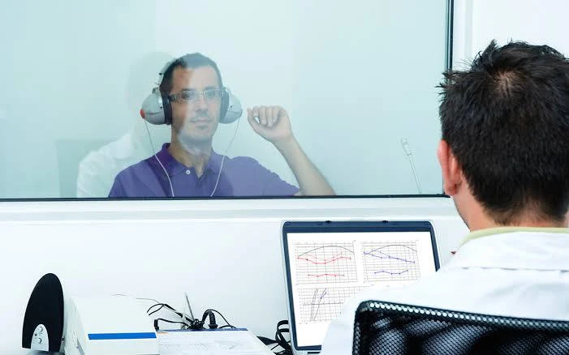
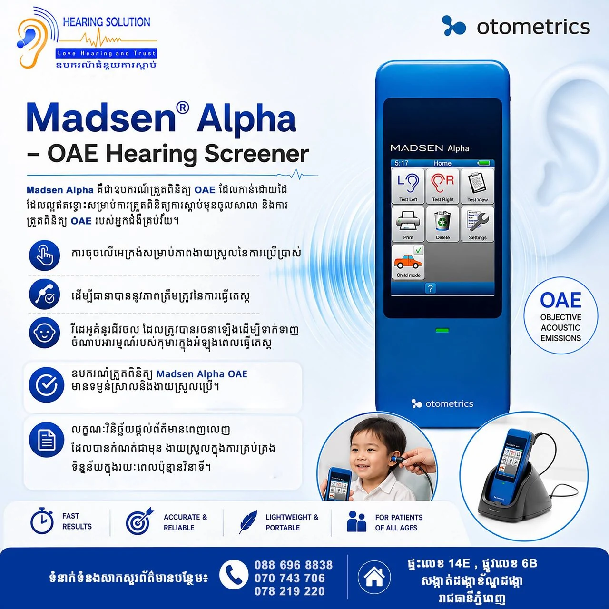
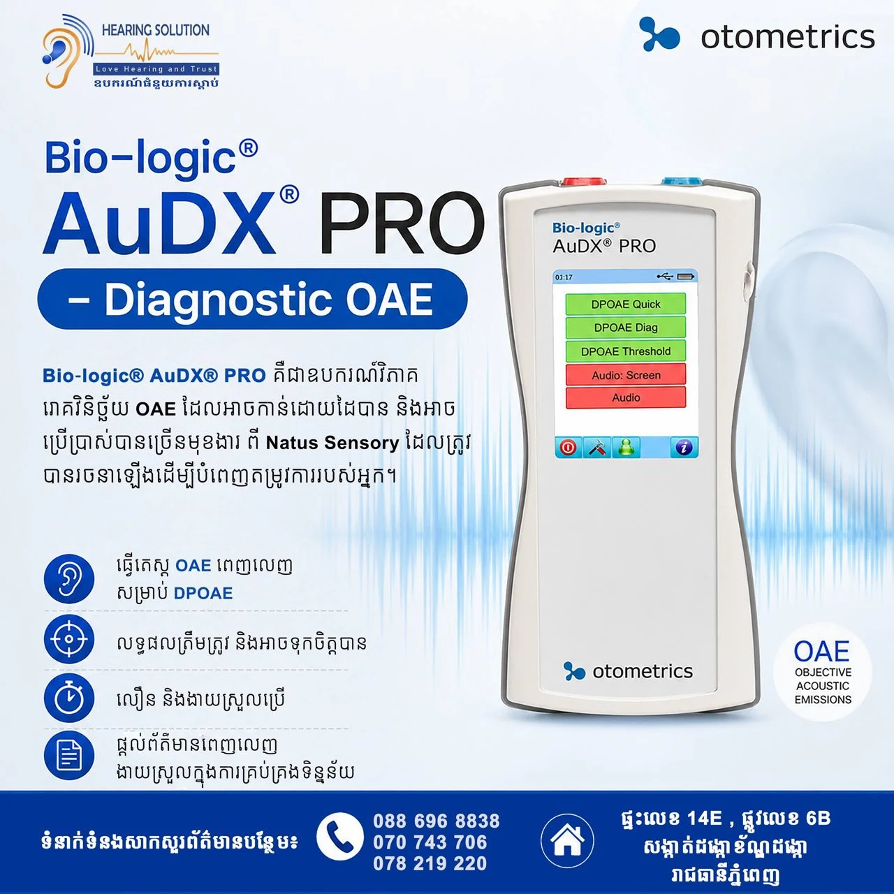
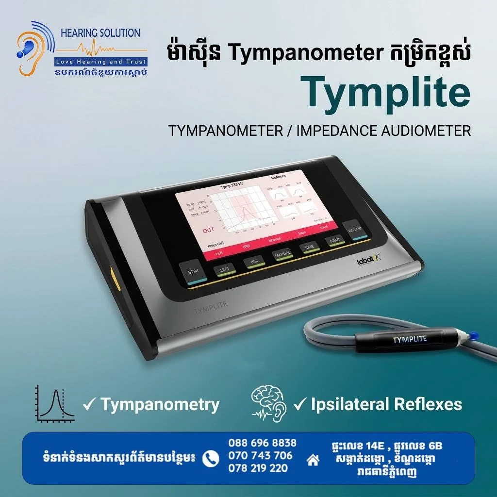
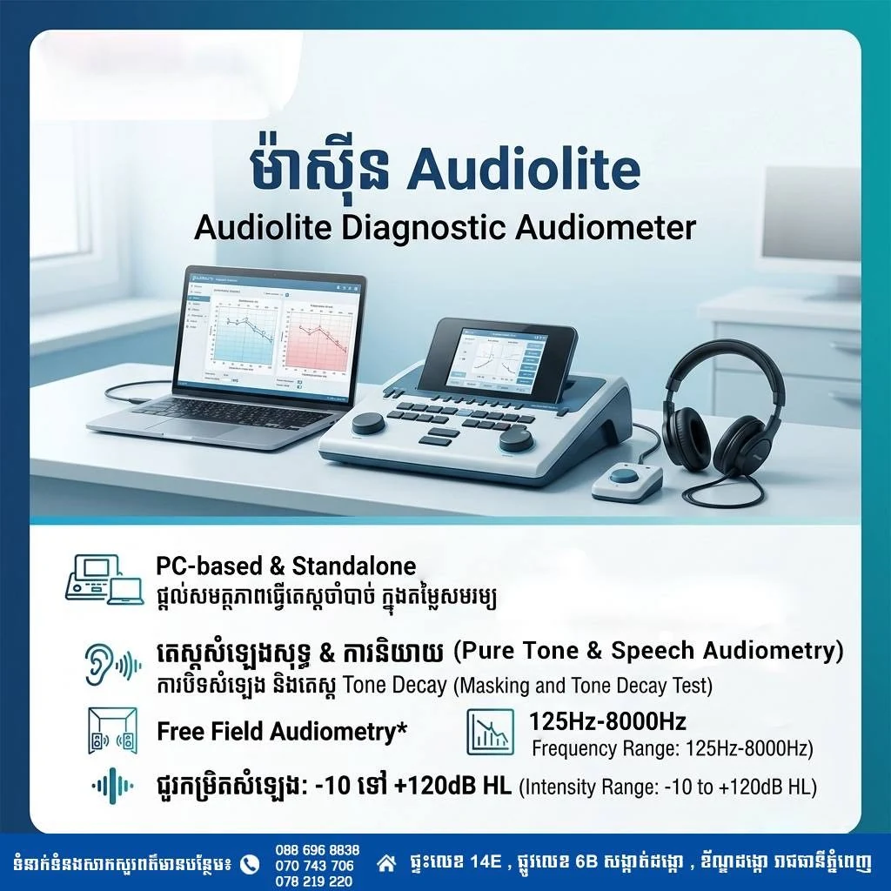
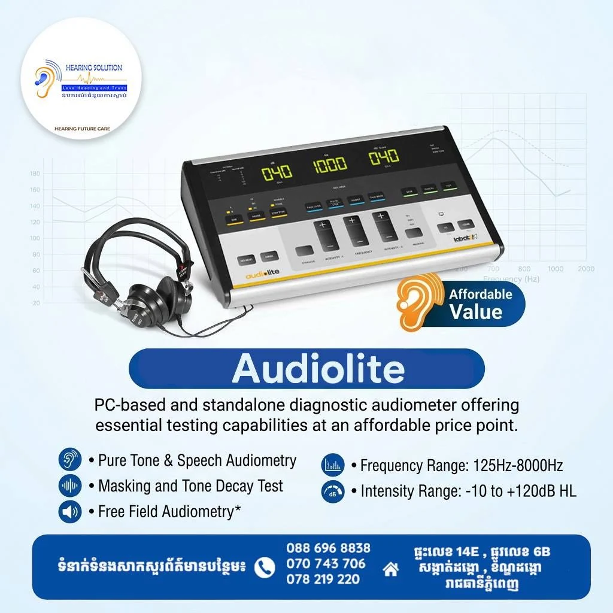
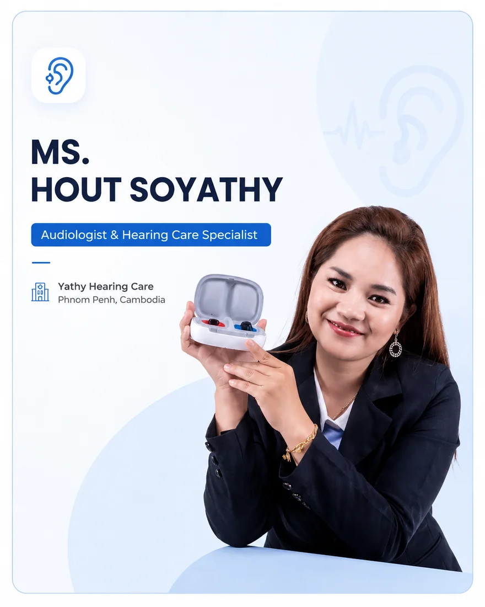

Professional hearing care in Phnom Penh
Better Hearing for a Better Everyday Life
Hearing Solution Cambodia provides hearing consultation, hearing assessments, hearing-aid guidance, and supportive services for children and adults.
- Professional hearing support
- Modern assessment services
- Solutions for children and adults

Brand Update
Hearing Future Care is now Hearing Solution
Previously known as Hearing Future Care, we have updated our brand to Hearing Solution. While our name has evolved, our commitment remains the same — delivering trusted hearing care, professional support, and quality solutions for our patients and partners.


Same commitment. Updated identity.

and Trust
About hearing solution
Care, Technology and Support You Can Trust
Hearing Solution Cambodia supports individuals and families with hearing-related consultation, assessment, hearing-aid guidance, and supportive educational services. Our goal is to help each client better understand their hearing needs and explore suitable next steps.
Professional Care
Clear guidance and attentive support for each client.
Personalized Solutions
Recommendations based on individual hearing and communication needs.
Ongoing Support
Continued guidance for hearing devices and related services.
Our services
Comprehensive Hearing and Support Services
Explore the services available to help with hearing, communication, and learning-support needs.
Hearing Consultation
Discuss hearing concerns and learn about suitable assessment options.
Audiogram Hearing Test
A hearing assessment that helps identify hearing sensitivity across different sound levels.
Otoacoustic Emissions Test
A non-invasive test used to assess inner-ear responses.
Hearing Aid Consultation
Guidance on hearing-aid styles, features, fitting considerations, and daily use.
Hearing Device Support
Help with basic device guidance, care, maintenance, and follow-up questions.
Speech and Language Support
Support services focused on communication and language-development needs.
Special Education
Individualized educational support based on the learner's needs.
Academic Assessment
Assessment support to better understand areas of academic strength and difficulty.
Hearing Aid Products
Explore Our Hearing Aid Solutions
Explore a range of hearing-aid technologies and styles from Signia and Phonak. Product suitability depends on individual hearing needs, lifestyle, comfort and professional assessment.
Signia
Rechargeable hearing-aid solutions offering connectivity, discreet styles and advanced listening technology.
Signia
RIC Pure Charge&Go IX
Receiver-in-Canal · Rechargeable
Signia
Pure Charge&Go BCT IX
Receiver-in-Canal · Rechargeable
Signia
Motion Charge&Go IX
Receiver-in-Canal · Rechargeable
Signia
Motion Charge&Go IX BTE
Behind-the-Ear · Rechargeable
Signia
Silk Charge&Go IX
Discreet In-Ear · Rechargeable
Signia
Insio Charge&Go IX
Custom In-Ear · Rechargeable
Signia
Signia Styletto IX
Discreet In-Ear · Rechargeable
Phonak
A range of connected hearing solutions for adults, children, custom fittings and specialized hearing needs.
Phonak
Phonak Audéo Lumity
Receiver-in-Canal · Rechargeable
Phonak
Phonak Naída Lumity
Behind-the-Ear · Rechargeable
Phonak
Phonak Virto
Custom In-Ear
Phonak
Phonak CROS Infinio
Single-Sided Hearing Solution
Phonak
Phonak Sky Lumity
Children’s Hearing Solution
Phonak
Phonak Sky Link Marvel
Children’s Hearing Solution
Phonak
Phonak Audéo Infinio Ultra R
Receiver-in-Canal · Rechargeable
Phonak
Phonak Virto Infinio
Custom In-Ear
Phonak
Phonak CROS Paradise
Single-Sided Hearing Solution
Phonak
Phonak Audéo Infinio Ultra Sphere
Receiver-in-Canal · Rechargeable
Professional Equipment
Professional Hearing & Diagnostic Solutions
Clinical and diagnostic hearing equipment designed for hospitals, ENT clinics, audiology centers and professional hearing care providers.
Contact Hearing Solution Cambodia for product consultation, specifications and institutional solutions.

Madsen Alpha
OAE Hearing Screener
Portable OAE screening solution designed for fast and reliable hearing screening across different patient age groups.

Bio-logic AuDX PRO
Diagnostic OAE
Professional diagnostic OAE system for comprehensive objective hearing assessment and clinical testing.

Tymplite
Tympanometer / Impedance Audiometer
Clinical tympanometry solution for middle-ear assessment including tympanometry and ipsilateral reflex testing.

Audiolite
Diagnostic Audiometer
PC-based and standalone diagnostic audiometer supporting pure tone, speech audiometry and essential clinical hearing tests.

Audiolite
Clinical Audiometer
Professional audiometry solution offering essential hearing test capabilities for clinics and hearing-care facilities.
Why choose hearing solution
Support at Every Step of Your Hearing Journey
We aim to make each conversation clear, supportive, and centered on your next practical step.
Attentive Consultation
Time and attention to help you understand available options.
Modern Hearing Assessments
Assessment services to help explore hearing-related concerns.
Personalized Device Guidance
Guidance around features, style, fitting, and daily use.
Continued Client Support
Ongoing help for device questions and related services.
Leadership
Meet Our Management Team
Meet the professionals supporting Hearing Solution Cambodia’s commitment to quality hearing care, clinical expertise and community health.
Ms. Vong Khunnary
Board of Director, Hearing Solution
Ms. Vong Khunnary is a skilled Hearing Specialist and Basic Speech Therapist with a strong commitment to advancing hearing care and mental health. As the founder of Hearing Solution, she works to provide modern hearing solutions while supporting the mental well-being of her patients.
Prof. Dr. Christopher James Waterworth
Executive Director
Senior Lecturer, Department of Audiology and Speech Pathology, The University of Melbourne, Australia
Prof. Dr. Christopher James Waterworth is Executive Director of Hearing Solution Cambodia and a senior academic in audiology at the University of Melbourne, with extensive experience in clinical audiology, hearing care, research, training, and global health initiatives.
Dr. James David Komanya
MBBS, MMEDSC
Clinical Audiology & Hearing Therapy
Dr. James David Komanya is a Medical Doctor and Clinical Audiologist from Tanzania with extensive experience in hearing healthcare, clinical audiology, medical education and digital health innovation.
Mr. Bibek Sapkota
BASLP
Audiologist & Speech Therapist
Mr. Bibek Sapkota is a registered Audiologist and Speech Language Pathologist with experience in hearing rehabilitation, diagnostics, ENT screening, assessment, and auditory verbal therapy across different age groups and care settings.
Our Partner Network
Find Care at Our Partner Locations
Access hearing and ENT care closer to you through our trusted partner network across Cambodia.
Dr. Heng Senghor
ENT Specialist
Domreysor Clinic
Kampong Chhnang Province
Dr. Kruy Sengchhorn
ENT Specialist
Sereyboth Cabinet
Phnom Penh

Ms. Hout Soyathy
Audiologist & Hearing Care Specialist
Yathy Hearing Care
Cambodia
Dr. Sok Leng
Pediatric Specialist
Kampot Province
Dr. Chan Leang Heng
ENT Specialist
Heng Soriya Cabinet
Takeo Province
Book an appointment
Take the Next Step Toward Better Hearing Support
Send an appointment request and the Hearing Solution Cambodia team can contact you to confirm the details.
Hearing knowledge
Helpful Information for Better Hearing Care
Explore hearing-care education and practical information designed to support better hearing and communication.
Partnership
Partner With Hearing Solution Cambodia
Join us in expanding access to quality hearing care, awareness, professional training and community support.
- Hospitals and Clinics
- Schools and Educational Institutions
- NGOs and Community Organizations
- Healthcare Professionals
- Corporate Wellness Programs
- Hearing-Aid and Medical Technology Partners
Frequently asked questions
Helpful Answers, Before You Visit
For medical advice or urgent concerns, please consult a qualified healthcare professional.
A hearing assessment may be considered when someone notices difficulty following conversations or has concerns about hearing.
A consultation is an opportunity to discuss hearing concerns and learn about suitable assessment or support options.
Yes. Our team can discuss general style and feature considerations based on your needs and preferences.
Our supportive services include speech and language support, special education, and academic assessment.
Contact us
Let’s Start a Conversation
Reach out to ask about our services, request an appointment or discuss hearing-care support.
No. 14E, St. 6B
Sangkat Donkor
Khna Dongkor
Phnom Penh